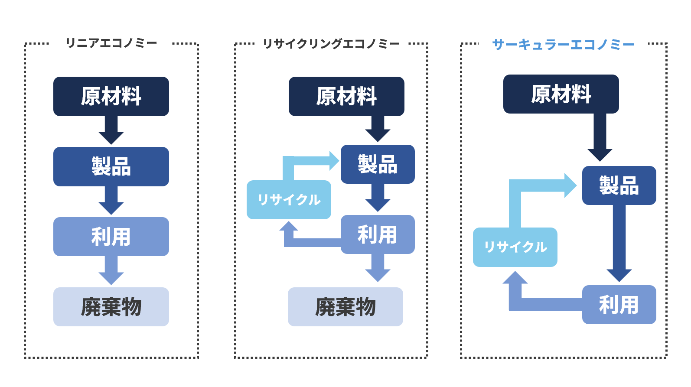
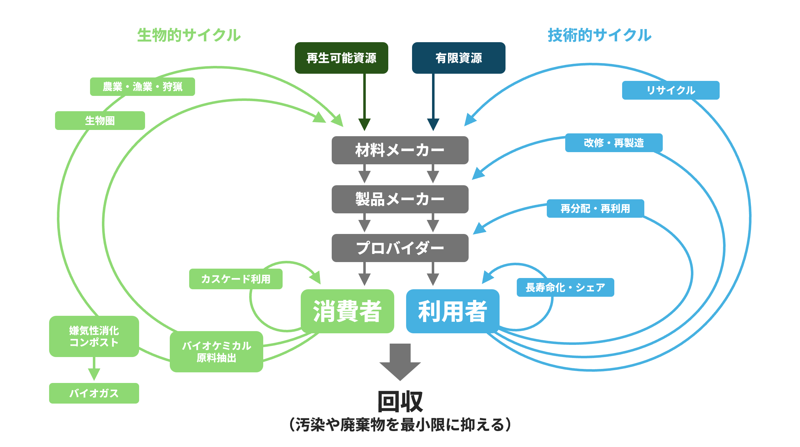
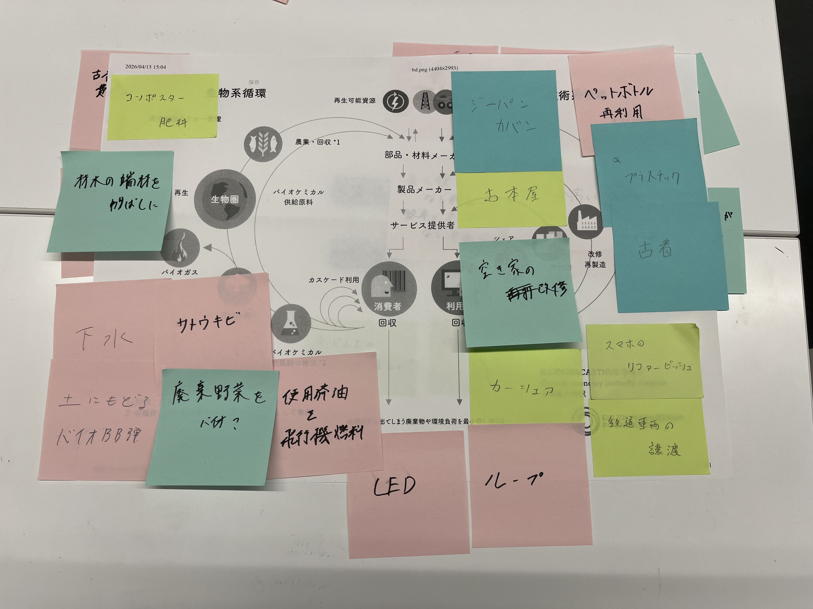
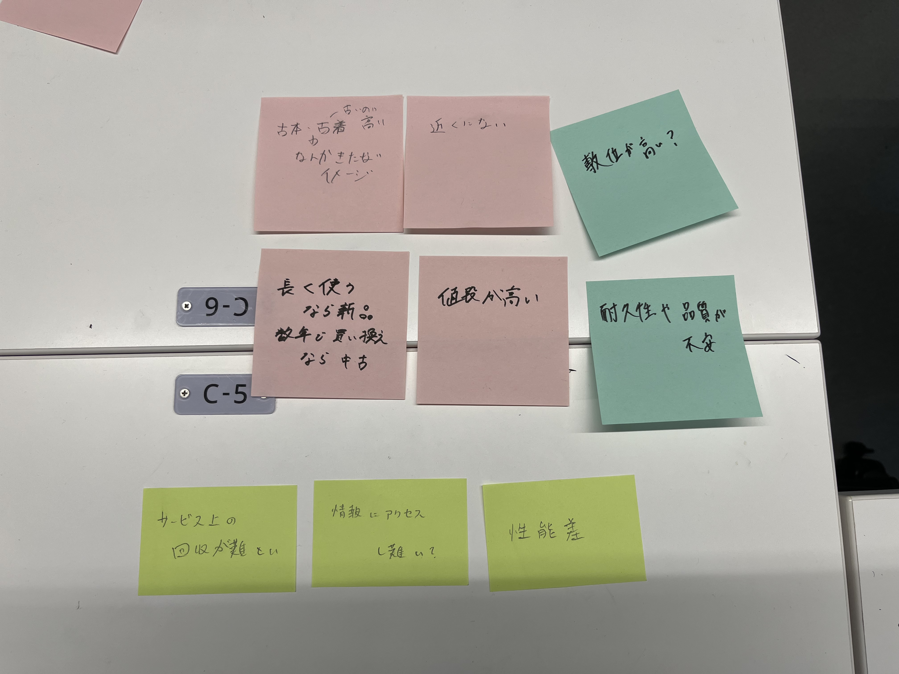

サーキュラーエコノミーとは
サーキュラーエコノミーは、持続可能な循環型の経済システム のことを指します。
有限である資源を再利用・リサイクルすることで、廃棄物を最小限に抑えながら経済を回していきます。
他の類型には、一方通行のシステムであるリニアエコノミーや、一部のみが循環するリサイクリングエコノミーがあります。
これらは、廃棄物を発生させてしまう点において、完全な循環型とは言えません。
より完全な循環型のシステムを作り上げ、モノの無駄をなくすことが何より重要です。
そして、そのシステムの内容を詳細に示したのが、バタフライダイアグラムという図です。
左側には再生可能資源の循環が、右側には有限資源の循環がそれぞれ記されています。
限りある資源をこのサイクル内で循環させることで、持続可能な社会を実現可能にします。
ただし、矢印の長さが伸びるほど、工程における環境負荷が高まる ことに注意が必要です。
有限である資源を再利用・リサイクルすることで、廃棄物を最小限に抑えながら経済を回していきます。

他の類型には、一方通行のシステムであるリニアエコノミーや、一部のみが循環するリサイクリングエコノミーがあります。
これらは、廃棄物を発生させてしまう点において、完全な循環型とは言えません。
より完全な循環型のシステムを作り上げ、モノの無駄をなくすことが何より重要です。

そして、そのシステムの内容を詳細に示したのが、バタフライダイアグラムという図です。
左側には再生可能資源の循環が、右側には有限資源の循環がそれぞれ記されています。
限りある資源をこのサイクル内で循環させることで、持続可能な社会を実現可能にします。
ただし、
サーキュラーエコノミー普及の課題
サーキュラーエコノミーにつながる取り組みや製品・サービスは身近なところに多く存在します。
グループの話し合いで出たものでは、カーシェアサービスや古布の再利用品、植物のバイオマス燃料化などがありました。
他にも、さまざまな種類の循環的なシステムが社会には存在しているはずです。
しかし、そうした理想的なシステムの多くは、世間にはあまり普及していません。
そこで、循環性の高い製品・サービスを利用するにあたっての障壁を考察しました。
いくつかの意見があがりましたが、そのほとんどは大きく２つに分けられます。
それは、情報収集の難しさやコストなどが原因の「使えない」障壁 と、品質などが原因の「使いたくない」障壁 です。
両者が存在することによって、サーキュラーエコノミーの概念そのものが広まりにくい状況にあるようにも思えます。
こうした現状を打破するためにも、経営学的な視点からさまざまな工夫を行っていく必要があるのです。

グループの話し合いで出たものでは、カーシェアサービスや古布の再利用品、植物のバイオマス燃料化などがありました。
他にも、さまざまな種類の循環的なシステムが社会には存在しているはずです。
しかし、そうした理想的なシステムの多くは、世間にはあまり普及していません。
そこで、循環性の高い製品・サービスを利用するにあたっての障壁を考察しました。

いくつかの意見があがりましたが、そのほとんどは大きく２つに分けられます。
それは、情報収集の難しさやコストなどが原因の
両者が存在することによって、サーキュラーエコノミーの概念そのものが広まりにくい状況にあるようにも思えます。
こうした現状を打破するためにも、経営学的な視点からさまざまな工夫を行っていく必要があるのです。